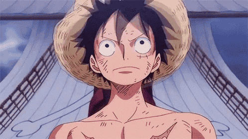
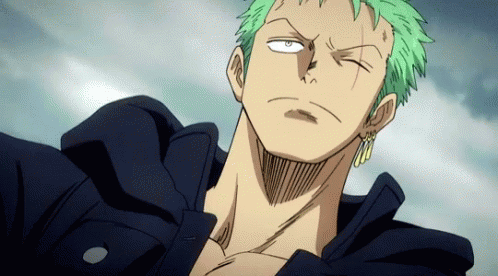
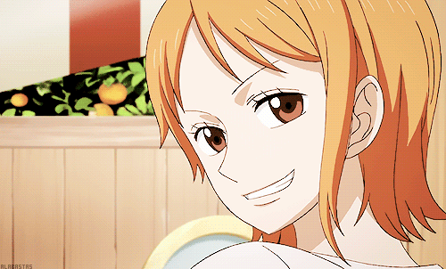
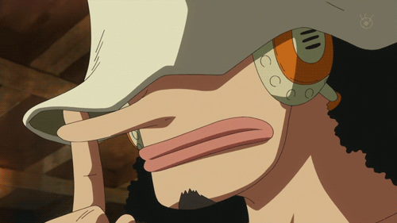
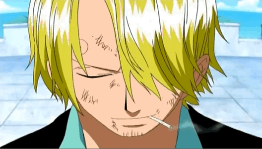
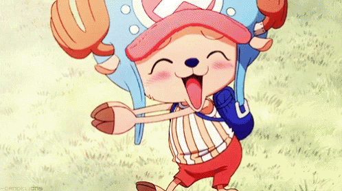
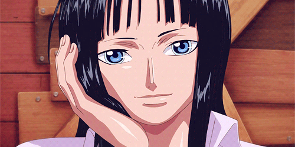
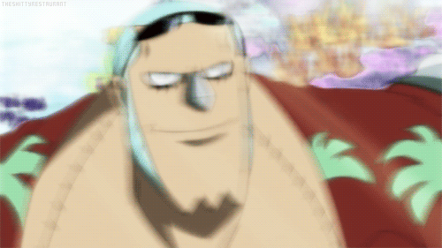
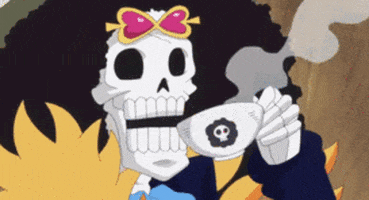
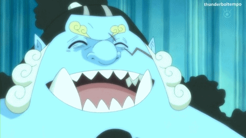

-
Monkey D. Luffy
- Capitão
- Gomu Gomu no mi
O capitão dos Piratas do Chapéu de Palha, que possui poderes elásticos devido à sua Fruta do Diabo e busca se tornar o Rei dos Piratas.
-
Roronoa Zoro
- Espadachim
- Est. Três Espadas
Um espadachim habilidoso que utiliza o estilo de luta de três espadas. Ele é o espadachim da tripulação e um dos combatentes mais fortes.
-
Nami
- Navegadora
- Clima-Tact
A navegadora da tripulação, especializada em navegação e meteorologia. Ela possui um bastão chamado Clima-Tact, que lhe permite controlar o clima.
-
"God" Ussop
- Atirador
- Mira Absoluta
Um atirador habilidoso e mentiroso, especializado em armas de longo alcance. Ele é o atirador dos Chapéus de Palha e muitas vezes é responsável por fornecer suporte tático.
-
Vinsmoke Sanji
- Cozinheiro
- Diable Jamble
O cozinheiro da tripulação, conhecido por suas habilidades culinárias e por sua técnica de luta usando técnicas de artes marciais com os pés. Ele é um cavalheiro e está sempre atrás de belas mulheres.
-
Tony Tony Chopper
- Medico
- Hito Hito no Mi
Um médico rena que comeu a Fruta Hito Hito, o que o transformou em uma rena-humana. Ele é um membro valioso da tripulação e pode alternar entre diferentes formas e tamanhos.
-
Nico Robin
- Arqueóloga
- Hana Hana no Mi
Uma arqueóloga que tem conhecimento sobre a história antiga e possui a habilidade de ler os Poneglyphs, pedras com inscrições valiosas. Ela é uma das personagens mais misteriosas da tripulação.
-
Franky
- Carpinteiro
- Ciborgue
Um cyborg que possui habilidades técnicas e é responsável por construir e consertar o navio dos Piratas do Chapéu de Palha, o Thousand Sunny.
-
Brook
- Musico
- Yomi Yomi no Mi
Um esqueleto vivo e músico que pode tocar seu violino usando suas habilidades sobrenaturais. Ele é o músico da tripulação.
-
Jinbe
- Timoneiro
- Karatê dos Homem-Peixe
Jinbe é o timoneiro dos Piratas do Chapéu de Palha. Jinbe é um homem-peixe sendo um tubarão-baleia e um poderoso mestre do karatê Homem-Peixe.